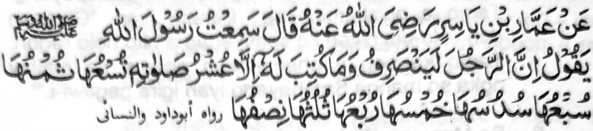

PINTO - III MANGA KATHARO PHOON SA HADITH

So Ammar bin Yasir (Radhiallaho ’Anho) na pitharo iyan a, 'Miyaneg aken so Rasulollah (Sallallaho 'Alaihi Wasallam) a gi-i niyan tharoon, Mata-an a so tao na anda den i kapakapasad iyan zambayang na aya miyambagi-an niyan (a balas) na isa ko sapolo bagi, isa ko siyaw bagi, isa ko walo bagi, isa ko pito bagi, isa ko nem bagi, isa ko lima bagi, isa ko pat bagi, isa ko telo bagi, isa ko dowa bagi”’
Miyapayag si-i a so balas na imbegay si-i ko taman a kapagi-ikhlas ago si-i ko taman a gi-i ron kaphiya-piya-i ko kininggolalanen ko Sambayang. Taman sa aden a aya miyakowa niyan na isa ko sapolo bagi o balas. Aden a manga ped a aya miyambagi-an niran a balas na iphoon sa isa ko sapolo bagi na taman sa isa ko dowa bagi ko pithamanan a kala a balas. Benar mambo so katharo-a sa aden a tao a khakowa niyan so tarotop a balas ago aden mambo a daden a khakowa niyan a mrito bo a balas.
Miya-aloy sa Hadith a so Allah na aden a takes Iyan ko katharima-a ko Paralo a Sambayang. Aya pephagitongen na anda taman i da kapaka-tarotop o Sambayang sangkoto a takes.
Miya-aloy si-i ko Hadith a so kambayorantang ko Sambayang i paganay a phaki-angkat o Allah sangka-iya Donya. Aden a phakatalingoma a masa a daden a sakatao bo ko isa a Barajoma a ba niyan kiyaphiya-piya-an so Sambayang iyan.